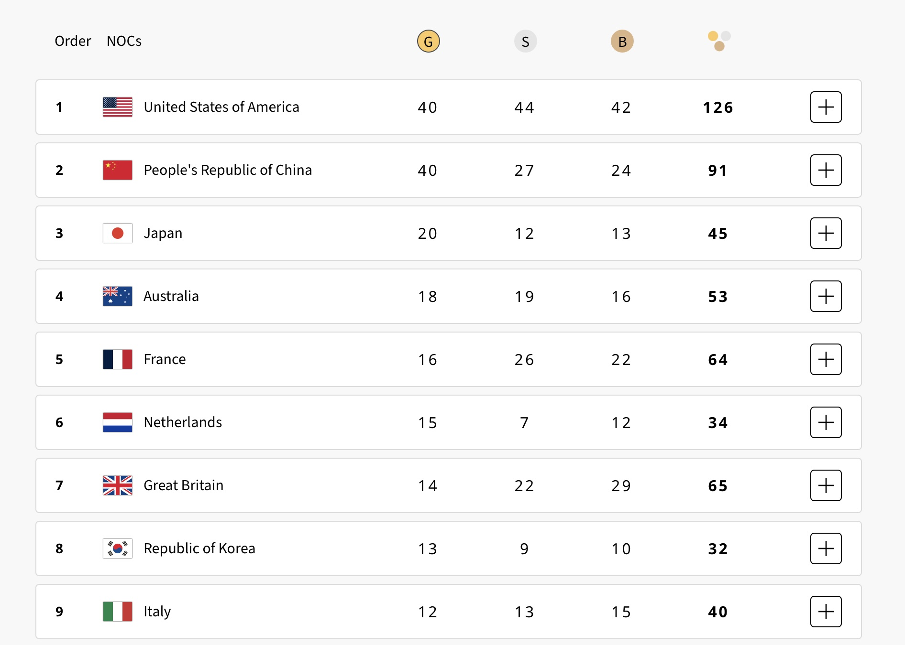
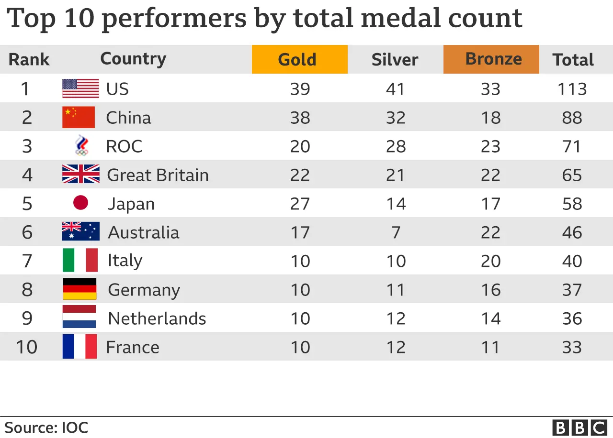

Paris Olympics have been real inspiration on so many levels. There is probably no athlete at this Olympics who does not prepare for it every day for 6-8 hours for their few minutes of fame. To see dedication and commitment of that sort is simply awe-inspiring.
I crunched some numbers on Olympics medal standings. A big congratulations to Georgia 🇬🇪 for delivering the best performance relative to their resources, and New Zealand 🇦🇺 for earning the highest number of medals per capita!
Data sources for medals (https://lnkd.in/gHCTqBCD) and country stats for 2023 (https://lnkd.in/ggpCHi_i).

This is not much different then Tokyo 2020:

!pip install pandas dataframe-image
Requirement already satisfied: pandas in /Users/nenadbozinovic/Projects/blog/venv/lib/python3.10/site-packages (2.2.2)
Requirement already satisfied: dataframe-image in /Users/nenadbozinovic/Projects/blog/venv/lib/python3.10/site-packages (0.2.4)
Requirement already satisfied: numpy>=1.22.4 in /Users/nenadbozinovic/Projects/blog/venv/lib/python3.10/site-packages (from pandas) (1.26.4)
Requirement already satisfied: python-dateutil>=2.8.2 in /Users/nenadbozinovic/Projects/blog/venv/lib/python3.10/site-packages (from pandas) (2.9.0.post0)
Requirement already satisfied: pytz>=2020.1 in /Users/nenadbozinovic/Projects/blog/venv/lib/python3.10/site-packages (from pandas) (2024.1)
Requirement already satisfied: tzdata>=2022.7 in /Users/nenadbozinovic/Projects/blog/venv/lib/python3.10/site-packages (from pandas) (2024.1)
Requirement already satisfied: nbconvert>=5 in /Users/nenadbozinovic/Projects/blog/venv/lib/python3.10/site-packages (from dataframe-image) (7.16.4)
Requirement already satisfied: aiohttp in /Users/nenadbozinovic/Projects/blog/venv/lib/python3.10/site-packages (from dataframe-image) (3.10.3)
Requirement already satisfied: requests in /Users/nenadbozinovic/Projects/blog/venv/lib/python3.10/site-packages (from dataframe-image) (2.31.0)
Requirement already satisfied: pillow in /Users/nenadbozinovic/Projects/blog/venv/lib/python3.10/site-packages (from dataframe-image) (10.3.0)
Requirement already satisfied: packaging in /Users/nenadbozinovic/Projects/blog/venv/lib/python3.10/site-packages (from dataframe-image) (24.0)
Requirement already satisfied: mistune in /Users/nenadbozinovic/Projects/blog/venv/lib/python3.10/site-packages (from dataframe-image) (3.0.2)
Requirement already satisfied: lxml in /Users/nenadbozinovic/Projects/blog/venv/lib/python3.10/site-packages (from dataframe-image) (5.3.0)
Requirement already satisfied: beautifulsoup4 in /Users/nenadbozinovic/Projects/blog/venv/lib/python3.10/site-packages (from dataframe-image) (4.12.3)
Requirement already satisfied: cssutils in /Users/nenadbozinovic/Projects/blog/venv/lib/python3.10/site-packages (from dataframe-image) (2.11.1)
Requirement already satisfied: html2image in /Users/nenadbozinovic/Projects/blog/venv/lib/python3.10/site-packages (from dataframe-image) (2.0.4.3)
Requirement already satisfied: cssselect in /Users/nenadbozinovic/Projects/blog/venv/lib/python3.10/site-packages (from dataframe-image) (1.2.0)
Requirement already satisfied: bleach!=5.0.0 in /Users/nenadbozinovic/Projects/blog/venv/lib/python3.10/site-packages (from nbconvert>=5->dataframe-image) (6.1.0)
Requirement already satisfied: defusedxml in /Users/nenadbozinovic/Projects/blog/venv/lib/python3.10/site-packages (from nbconvert>=5->dataframe-image) (0.7.1)
Requirement already satisfied: jinja2>=3.0 in /Users/nenadbozinovic/Projects/blog/venv/lib/python3.10/site-packages (from nbconvert>=5->dataframe-image) (3.1.3)
Requirement already satisfied: jupyter-core>=4.7 in /Users/nenadbozinovic/Projects/blog/venv/lib/python3.10/site-packages (from nbconvert>=5->dataframe-image) (5.7.2)
Requirement already satisfied: jupyterlab-pygments in /Users/nenadbozinovic/Projects/blog/venv/lib/python3.10/site-packages (from nbconvert>=5->dataframe-image) (0.3.0)
Requirement already satisfied: markupsafe>=2.0 in /Users/nenadbozinovic/Projects/blog/venv/lib/python3.10/site-packages (from nbconvert>=5->dataframe-image) (2.1.5)
Requirement already satisfied: nbclient>=0.5.0 in /Users/nenadbozinovic/Projects/blog/venv/lib/python3.10/site-packages (from nbconvert>=5->dataframe-image) (0.10.0)
Requirement already satisfied: nbformat>=5.7 in /Users/nenadbozinovic/Projects/blog/venv/lib/python3.10/site-packages (from nbconvert>=5->dataframe-image) (5.10.4)
Requirement already satisfied: pandocfilters>=1.4.1 in /Users/nenadbozinovic/Projects/blog/venv/lib/python3.10/site-packages (from nbconvert>=5->dataframe-image) (1.5.1)
Requirement already satisfied: pygments>=2.4.1 in /Users/nenadbozinovic/Projects/blog/venv/lib/python3.10/site-packages (from nbconvert>=5->dataframe-image) (2.17.2)
Requirement already satisfied: tinycss2 in /Users/nenadbozinovic/Projects/blog/venv/lib/python3.10/site-packages (from nbconvert>=5->dataframe-image) (1.3.0)
Requirement already satisfied: traitlets>=5.1 in /Users/nenadbozinovic/Projects/blog/venv/lib/python3.10/site-packages (from nbconvert>=5->dataframe-image) (5.14.3)
Requirement already satisfied: six>=1.5 in /Users/nenadbozinovic/Projects/blog/venv/lib/python3.10/site-packages (from python-dateutil>=2.8.2->pandas) (1.16.0)
Requirement already satisfied: aiohappyeyeballs>=2.3.0 in /Users/nenadbozinovic/Projects/blog/venv/lib/python3.10/site-packages (from aiohttp->dataframe-image) (2.3.5)
Requirement already satisfied: aiosignal>=1.1.2 in /Users/nenadbozinovic/Projects/blog/venv/lib/python3.10/site-packages (from aiohttp->dataframe-image) (1.3.1)
Requirement already satisfied: attrs>=17.3.0 in /Users/nenadbozinovic/Projects/blog/venv/lib/python3.10/site-packages (from aiohttp->dataframe-image) (24.2.0)
Requirement already satisfied: frozenlist>=1.1.1 in /Users/nenadbozinovic/Projects/blog/venv/lib/python3.10/site-packages (from aiohttp->dataframe-image) (1.4.1)
Requirement already satisfied: multidict<7.0,>=4.5 in /Users/nenadbozinovic/Projects/blog/venv/lib/python3.10/site-packages (from aiohttp->dataframe-image) (6.0.5)
Requirement already satisfied: yarl<2.0,>=1.0 in /Users/nenadbozinovic/Projects/blog/venv/lib/python3.10/site-packages (from aiohttp->dataframe-image) (1.9.4)
Requirement already satisfied: async-timeout<5.0,>=4.0 in /Users/nenadbozinovic/Projects/blog/venv/lib/python3.10/site-packages (from aiohttp->dataframe-image) (4.0.3)
Requirement already satisfied: soupsieve>1.2 in /Users/nenadbozinovic/Projects/blog/venv/lib/python3.10/site-packages (from beautifulsoup4->dataframe-image) (2.5)
Requirement already satisfied: more-itertools in /Users/nenadbozinovic/Projects/blog/venv/lib/python3.10/site-packages (from cssutils->dataframe-image) (10.4.0)
Requirement already satisfied: websocket-client<2.0.0,>=1.0.0 in /Users/nenadbozinovic/Projects/blog/venv/lib/python3.10/site-packages (from html2image->dataframe-image) (1.8.0)
Requirement already satisfied: charset-normalizer<4,>=2 in /Users/nenadbozinovic/Projects/blog/venv/lib/python3.10/site-packages (from requests->dataframe-image) (3.3.2)
Requirement already satisfied: idna<4,>=2.5 in /Users/nenadbozinovic/Projects/blog/venv/lib/python3.10/site-packages (from requests->dataframe-image) (3.7)
Requirement already satisfied: urllib3<3,>=1.21.1 in /Users/nenadbozinovic/Projects/blog/venv/lib/python3.10/site-packages (from requests->dataframe-image) (2.2.1)
Requirement already satisfied: certifi>=2017.4.17 in /Users/nenadbozinovic/Projects/blog/venv/lib/python3.10/site-packages (from requests->dataframe-image) (2024.2.2)
Requirement already satisfied: webencodings in /Users/nenadbozinovic/Projects/blog/venv/lib/python3.10/site-packages (from bleach!=5.0.0->nbconvert>=5->dataframe-image) (0.5.1)
Requirement already satisfied: platformdirs>=2.5 in /Users/nenadbozinovic/Projects/blog/venv/lib/python3.10/site-packages (from jupyter-core>=4.7->nbconvert>=5->dataframe-image) (4.2.0)
Requirement already satisfied: jupyter-client>=6.1.12 in /Users/nenadbozinovic/Projects/blog/venv/lib/python3.10/site-packages (from nbclient>=0.5.0->nbconvert>=5->dataframe-image) (8.6.1)
Requirement already satisfied: fastjsonschema>=2.15 in /Users/nenadbozinovic/Projects/blog/venv/lib/python3.10/site-packages (from nbformat>=5.7->nbconvert>=5->dataframe-image) (2.20.0)
Requirement already satisfied: jsonschema>=2.6 in /Users/nenadbozinovic/Projects/blog/venv/lib/python3.10/site-packages (from nbformat>=5.7->nbconvert>=5->dataframe-image) (4.23.0)
Requirement already satisfied: jsonschema-specifications>=2023.03.6 in /Users/nenadbozinovic/Projects/blog/venv/lib/python3.10/site-packages (from jsonschema>=2.6->nbformat>=5.7->nbconvert>=5->dataframe-image) (2023.12.1)
Requirement already satisfied: referencing>=0.28.4 in /Users/nenadbozinovic/Projects/blog/venv/lib/python3.10/site-packages (from jsonschema>=2.6->nbformat>=5.7->nbconvert>=5->dataframe-image) (0.35.1)
Requirement already satisfied: rpds-py>=0.7.1 in /Users/nenadbozinovic/Projects/blog/venv/lib/python3.10/site-packages (from jsonschema>=2.6->nbformat>=5.7->nbconvert>=5->dataframe-image) (0.20.0)
Requirement already satisfied: pyzmq>=23.0 in /Users/nenadbozinovic/Projects/blog/venv/lib/python3.10/site-packages (from jupyter-client>=6.1.12->nbclient>=0.5.0->nbconvert>=5->dataframe-image) (26.0.1)
Requirement already satisfied: tornado>=6.2 in /Users/nenadbozinovic/Projects/blog/venv/lib/python3.10/site-packages (from jupyter-client>=6.1.12->nbclient>=0.5.0->nbconvert>=5->dataframe-image) (6.4)
[notice] A new release of pip is available: 24.0 -> 24.2
[notice] To update, run: pip install --upgrade pip
import pandas as pdimport dataframe_image as dfi# Load the medal standings and world datamedal_standings = pd.read_csv('paris_2024_olympics_full_medal_standings_final.csv')world_data = pd.read_csv('world-data-2023.csv')# Assuming 'Country' is the column to join on in both datasetsmerged_data = pd.merge(medal_standings, world_data, on='Country', how='left')population_str ='Population (in M)'GDP_str ='GDP (in $B)'medals_per_million_people_str ='Total medals per 1M capita'medals_per_gdp ='Total medals per $1B GDP'merged_data = merged_data.dropna(subset=['Population', 'GDP'])# Remove dollar signs and commas from the 'GDP' column, then convert to floatmerged_data.rename(columns={'Total': 'Total medals'}, inplace=True) medals_str ='Total medals'merged_data[GDP_str] = merged_data['GDP'].replace({r'\$': '', ',': ''}, regex=True).astype(float) /10**9merged_data[population_str] = merged_data['Population'].replace({',': ''}, regex=True).astype(float) /10**6merged_data[medals_per_million_people_str] = merged_data[medals_str] / merged_data[population_str]merged_data[medals_per_gdp] = merged_data[medals_str] / merged_data[GDP_str]def sort_by_column(column_name, column_name2=None):# Sort the DataFrame by the 'Medals per 1M capita' in descending order sorted_data = merged_data.sort_values(by=column_name, ascending=False) final_table = sorted_data[['Country', 'Total medals'] + ([column_name2] if column_name2 else [])].reset_index(drop=True).head(10) final_table = final_table.round(2)# Create a new DataFrame with only 'Country' and 'Medals per 1M capita' final_table.index = final_table.index +1# Style the DataFrame to add borders styled_final_table = final_table.style.set_table_styles( [{'selector': 'th','props': [('border', '2px solid black')]}, {'selector': 'td','props': [('border', '1px solid black')]}, {'selector': 'table','props': [('border', '10px solid black')]}]).format(precision=2)# Save the table as a PNG file dfi.export(styled_final_table, f'final_table_{column_name}.png')# Optionally, you can print the top 10 rows to inspectreturn final_table